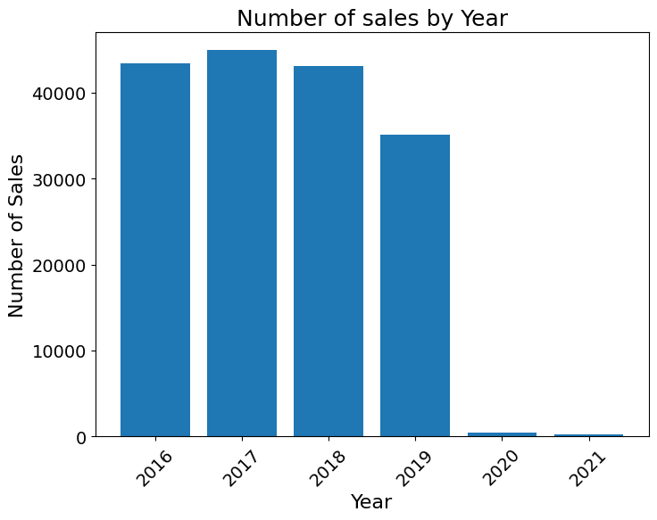
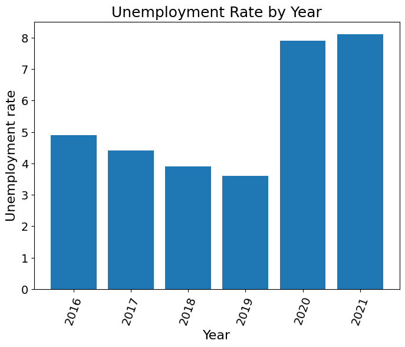
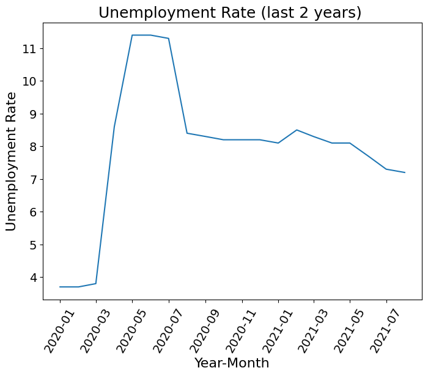
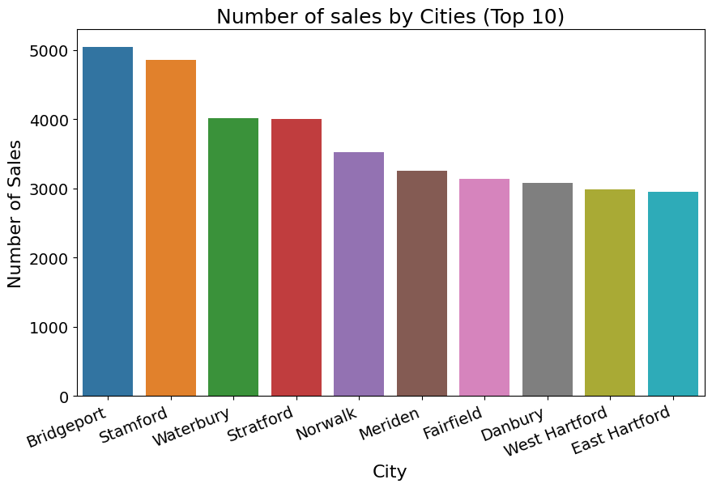
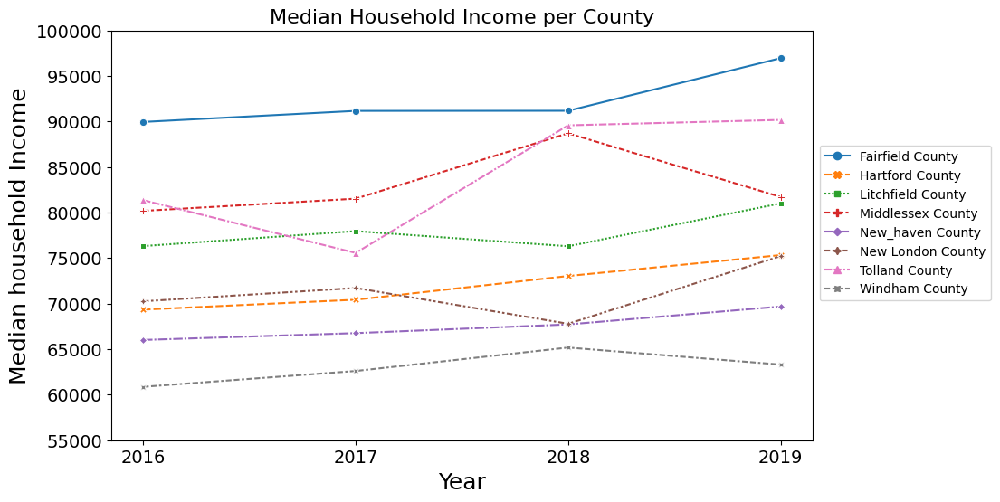
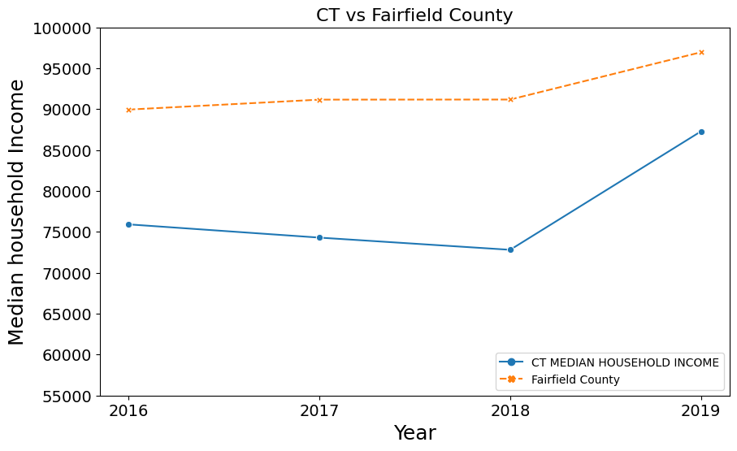
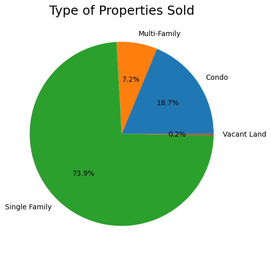

Introduction
The demand for properties in Connecticut have been increasing over the last couple of years. As the hypothesis states, the closer you are to NYC, the higher the demand is due to the income. This analysis responds to the following questions:
- Number of sales by Year
- Number of sales by City
- Unemployment Rate by Year
- Unemployment Rate during pandemic
- Median Household Income by Year per county
- Fairfield County Median Household Income vs CT Median Household Income
- Types of Properties purchased
For more detail click -> Data Analysis
Data Analysis

As stated on the introduction, this page will answer the questions visually.

In the last two years number of sales has decreased dramatically, why?

During the last two years there has been a pandemic. This massive event caused a lockdown which caused many people to stay home and spend conservatively. Due to this event, there is a correlation between the unemployment rates and the number of houses sold. Now let us take a look at the unemployment rate during last two years by month.

The unemployment rate skyrocketed since the pandemic event that began in March 2020. Due to this many companies had a reduced workforce and suffered losses in profits and capital.

This graph shows that the most popular areas to buy a house was in Fairfield County which accounts for seven out of ten cities that have train station (Metro North) that is accesible and will get them to NYC timely.

In Fairfield County, the median income has increased over the years in comparison to other counties. There has been a migration of people from NY that have moved to CT.

Below there is a chart that shows type of properties sold. According to the chart, many people prefer to buy single family homes because of privacy and cost.

Conclusion
This chart shows that the type of properties sold in Fairfield County were mainly single family homes. Fairfield County is less than 100km/62 miles from New York City. My hypothesis is correct.
We will focus on single family homes in Top 5 cities listed below
- Stamford
- Bridgeport
- Norwalk
- Fairfield
- Stratford
For more details click on Number of sales map . In this link as you click the pointer, you can see the number of sales.